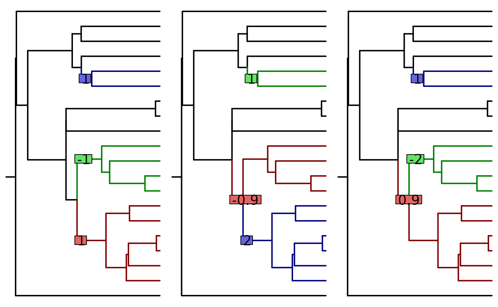
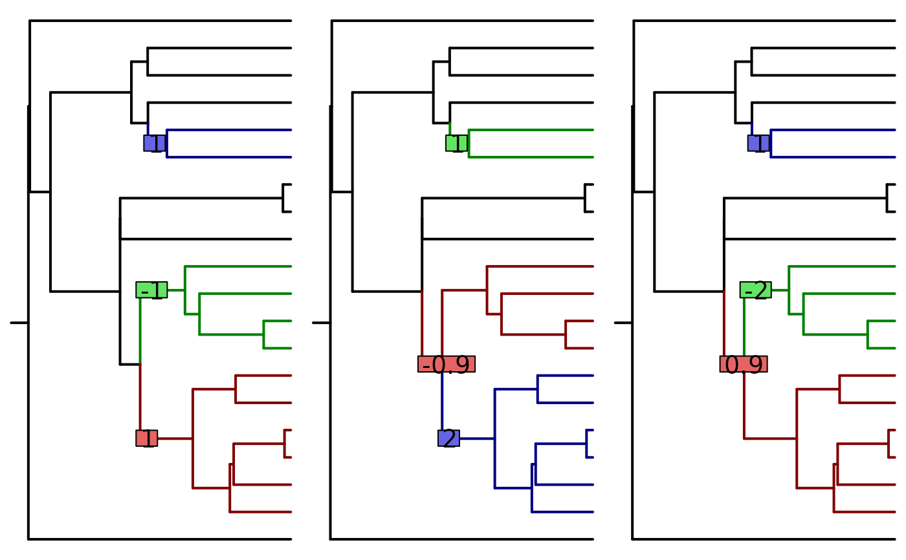

equivalent_shifts computes the equivalent shifts positions and their
corresponding values, assuming an ultrametric tree.
Usage
equivalent_shifts(
phylo,
params,
T_tree = incidence.matrix(phylo),
part.list = enumerate_tips_under_edges(phylo),
times_shared = NULL
)Arguments
- phylo
a phylogenetic tree, of class
phylo.- params
an object of class
params_process, result inference by functionPhyloEM, or constructed through functionparams_process- T_tree
(optional) matrix of incidence of the tree, result of function
incidence.matrix- part.list
(optional) list of partition of the tree, result of function
enumerate_tips_under_edges.(optional) a matrix, result of function
compute_times_ca.
Value
object of class equivalent_shifts, with entries:
- eq_shifts_edges
matrix of equivalent shifts
- shifts_and_betas
matrix of corresponding shifts values
- phylo
the entry phylogenetic tree
- p
the dimension
Details
This function is only valid for ultrametric trees, and for models: BM, OU with fixed root or stationary root. It assumes that there are no homoplasies.
Examples
if (requireNamespace("TreeSim", quietly = TRUE)) {
## Simualte a tree
set.seed(17920902)
ntaxa = 20
phylo <- TreeSim::sim.bd.taxa.age(n = ntaxa, numbsim = 1, lambda = 0.1,
mu = 0, age = 1, mrca = TRUE)[[1]]
## Define parameters (BM, fixed root)
params <- params_BM(p = 4, edges = c(6, 17, 31),
values = cbind(1:4, -(1:4), rep(1, 4)))
## Find equivalent solutions and plot them
eq_shifts <- equivalent_shifts(phylo, params)
eq_shifts
plot(eq_shifts)
## Extract the values
# Shifts values for trait 2, for the three shifts (rows), and three solutions (columns)
extract(eq_shifts, trait = 2, what = "shifts_values")
# Root values for trait 4, for the tree solutions (columns)
extract(eq_shifts, trait = 4, what = "root_values")
## Define parameters (OU, stationary root
params <- params_OU(p = 4, edges = c(6, 17, 31),
selection.strength = 0.1,
values = cbind(1:4, -(1:4), rep(1, 4)),
random = TRUE)
## Find equivalent solutions and plot them
eq_shifts <- equivalent_shifts(phylo, params)
eq_shifts
plot(eq_shifts)
## Extract the values
# Shifts values for trait 2, for the three shifts (rows), and three solutions (columns)
extract(eq_shifts, trait = 2, what = "shifts_values")
# Root values for trait 4, for the three solutions (columns)
extract(eq_shifts, trait = 4, what = "root_values")
}
 
#> [,1] [,2] [,3]
#> [1,] 1.241267e-17 2.482534e-17 0

#> [,1] [,2] [,3]
#> [1,] 1.241267e-17 2.482534e-17 0